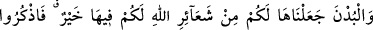
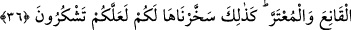
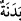
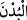
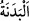
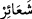

senden halkın kendilerine âmâde kılınmasını istedi. Sen de onlara istediklerini verdin.
Ben ise senden onların bana güzel davranmamalarını istiyorum ki, Ulu hazretinden
başkasına sığınmayayım.” Sabah olunca ona bu sözü sordum. Dedi ki: “Ey oğul, sen
‘Allah’ım emrime âmâde kıl.’ diyecek yerde ‘Allah’ım benim için/benim lehime ol.’
diye duâ et. Çünkü Allah senin için/senin lehine olursa, asla hiçbir şeye muhtaç
olmazsın.”
Şu halde taleb yolunda çalışmak ve matlûb hâsıl olana kadar duâda gayret etmek
gerekir.
Molla Câmî der ki:
Senin visaline ermek talepsiz mümkün değildir; evet, kim verir
Hac devlet ve saadeti, çölleri aşmadıkça elde edilmez
36. Biz, büyük baş hayvanları da sizin için Allah’ın (dininin) işaretlerinden
(kurban) kıldık. Onlarda sizin için hayır vardır. Şu halde onlar, ayakları üzerine
dururken üzerlerine Allah’ın ismini anınız (ve kurban ediniz). Yan üstü yere
düştüklerinde ise, artık (canı çıktığında) onlardan hem kendiniz yeyin, hem de
ihtiyacını gizleyen-gizlemeyen fakirlere yedirin. İşte bu hayvanları biz,
şükredesiniz diye sizin istifadenize verdik.
“Biz, büyük baş hayvanları da sizin için Allah’ın” koyduğu dininin “işaretlerinden
(kurban) kıldık.”
“__WORD__ “__WORD__ kelimesinin çoğuludur. Deve sığır gibi hedy ve kurban olarak kesilmesi
câiz olan hayvanlardır. Bedenlerin iri olmasından dolayı onlara bu ad verilmiştir.
Bahru’l-ulûm’da der ki: “__WORD__ sözlükte özellikle devenin erkek ve dişisine denilir.
Şerîatta ise deve ve sığır için kullanılır. Çünkü ikisi de iri gövdelidir. Bunun için Hz.
Peygamber (a.s.), yedi kişi adına kurban edilebilmesi konusunda sığırı deveye ilâve
etmiştir.” el-Kâmûs’ta der ki: Kurbanlık koyuna “udhiyye” denildiği gibi Mekke’ye
hedy olunan erkek ve dişi deve ve sığıra “__WORD__ denilir. Kâşifî şöyle der: “Bunlar,
hedy/kurban etmek için Beytülharam’a getirilen develer ve öküzlerdir.”
“__WORD__ (işâretler)” kelimesi, “Beytullah/Allah’ın evi” ifâdesinde olduğu gibi kendisini
yüceltmek için “Allah” ismine izâfe edilmiştir. Çünkü, ulu olana izâfe edilen de uludur.
Onları kurban etmeyi sizin için Allah Teâlâ’nın dininin nişanları, şiarları kıldık.